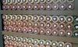

1912: Alan Mathison Turing nasceu em Maida Vale, Londres, filho de Ethel Sara Turing (nee Stoney) e
Julius Mathison Turing.
1918: Alan se junta à escola diurna de St Michael em Hastings, onde não se sai muito bem.
Ele é enviado para a Hazelhurst Preparatory School quando tem dez anos, onde se sai muito melhor e aprende
a jogar xadrez.
1926: Alan torna-se aluno da Escola Sherborne em Dorset. Alan não está interessado em sua
educação clássica tradicional, pois ele realmente quer passar seu tempo fazendo Ciências e Matemática.
1927: Alan torna-se profundamente interessado no trabalho de Albert Einstein e consegue
desenvolver um trabalho feito por Einstein com base no questionamento das Leis do Movimento de Newton.
1928-1930: Alan entra na 6ª série na Sherborne e se torna grande amigo de Christopher Morcom,
outro garoto talentoso que ama matemática e ciências. Enquanto eles se inscrevem para a universidade,
Christopher morre repentinamente. Alan fica arrasado.
1931-1934: Alan torna-se um graduando no King's College, Cambridge para estudar Matemática.
Ele gosta da universidade e é muito bem-sucedido. Ele se forma com distinção.
1935: O trabalho de Alan é tão notável que ele foi eleito Fellow do King's College, com
apenas 23 anos.
1938: Alan vai para a Universidade de Princeton, na América, para estudar matemática e
recebe um doutorado.
1939: Setembro - Alan é convidado a ingressar na Escola de Códigos e Cifras do Governo
e chega a Bletchley Park no dia seguinte à declaração da guerra.

1939-1940: Com Gordon Welchman, Alan desenvolve o Bombe, um dispositivo para descriptografar
as mensagens enviadas pelos alemães usando sua máquina Enigma.
1940-1942: Durante 1942, Alan e seus colegas também conseguiram quebrar o mais complicado
sistema alemão Naval Enigma. Esta é uma grande ajuda para os Aliados na Batalha do Atlântico.
1943-1945: Alan é convidado a trabalhar como um elo de inteligência de alto nível com os EUA,
que ele visita para compartilhar informações sobre criptologia (quebra de código).
1945: No final da guerra, Alan Turing recebe o OBE por seus serviços durante a guerra.
1946: Alan ingressou no National Physical Laboratory, em Teddington, e publicou um artigo
com o primeiro projeto detalhado de um computador com programa armazenado.
1948: Alan is appointed as as Reader in the Mathematics Department of Manchester University.
1949: Alan é nomeado vice-diretor do Laboratório de Computação da Manchester University.
1950: Alan publishes'Computing Machinery and Intelligence' in which he develops the
Turing Test, an attempt to define a standard for a machine to be called intelligent. The paper will become
very famous.
1951: Durante seu ano, Alan é eleito Fellow da Royal Society FRS e também dá uma palestra
sobre Inteligência Artificial no terceiro programa da rádio BBC.
1952: Janeiro - Alan é preso por indecência grosseira e perde seu certificado de segurança.
Ele recebe tratamento químico como alternativa à prisão. O tratamento hormonal tem um efeito muito
prejudicial sobre ele.
1954: 8 de junho - o corpo de Alan é encontrado em sua casa em Wilmslow, Cheshire.
A autópsia descobre que sua morte foi causada por envenenamento. Uma maçã comida pela metade é encontrada
ao lado dele, misturada com cianeto. Seu corpo é cremado no crematório de Woking.